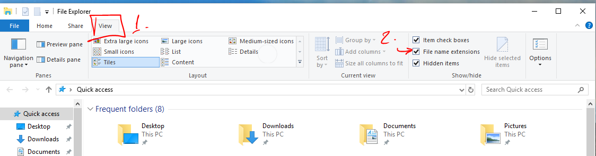
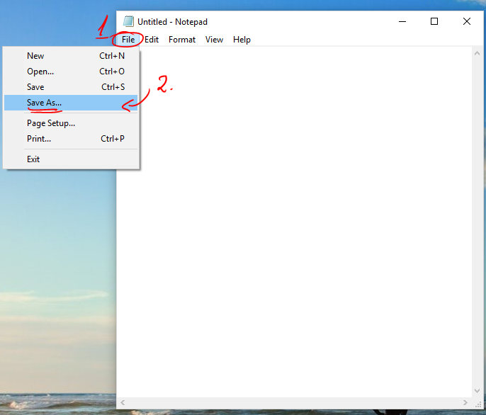
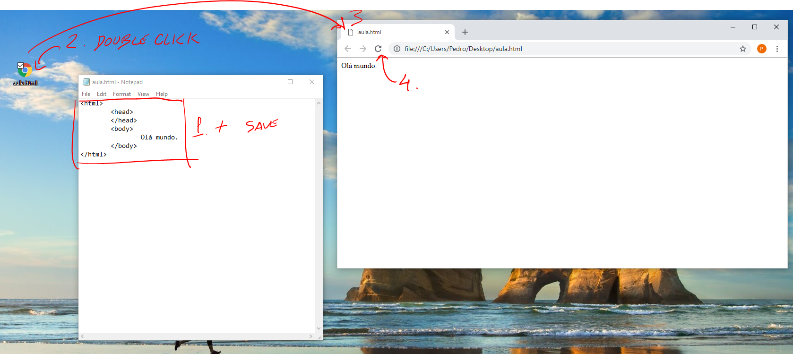

Começa por mostrar as extensões dos ficheiros
Depois abre o Notepad (bloco de notas)
A primeira coisa a fazer é "Gravar como..."
Na janela que aparece, faz o seguinte:
por fim, escreve algum html no bloco de notas
grava, e depois faz duplo clique no ficheiro para abrir no browser
sempre que gravares, podes fazer refresh no browser para ver o resultado
